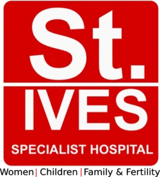
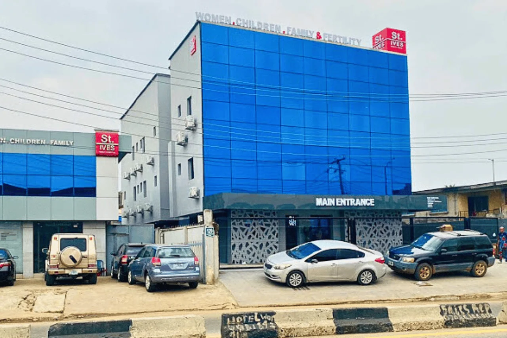
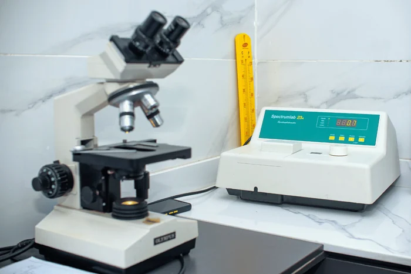
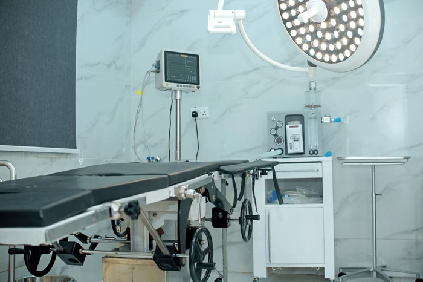
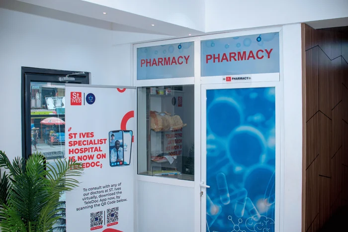
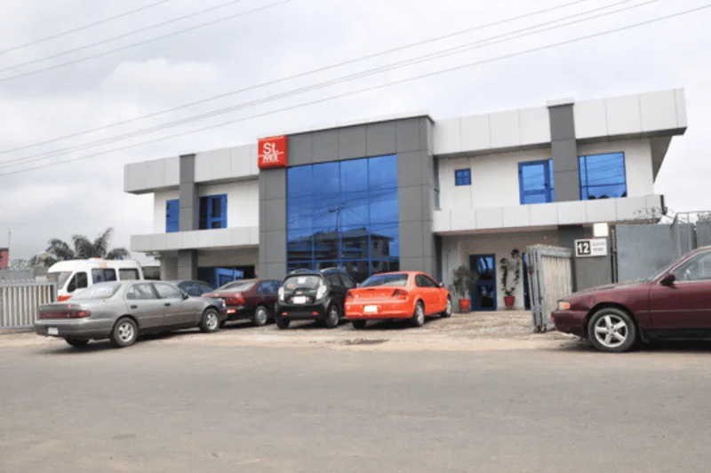
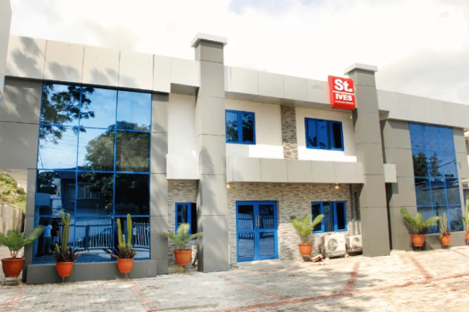

Book an appointment
ServiceFertility & IVF
BranchOpebi
DoctorAny specialist
DateThu · sample
9:0010:3012:002:30
Confirm appointment
My results
Hormone profileReady
Pelvic scan reportReady
Semen analysisPending
Video consult · Fri 4pmJoin →

Book appointmentBook at any of our five branches, see your results and join a video consultation, all from your phone.

Patients book, reschedule and get results without calling the front desk. Staff see one calendar across all five branches.
Illustration of a feature we can build. Not live today. Patient name, tests, dates and times are samples.
Started in a 3-bedroom apartment in Ikeja in 1996. Now a SafeCare-accredited multi-specialist hospital.



With the portal, a patient's history follows them to whichever branch they visit.


Head office: 12 Salvation Road, Opebi, Lagos
(+234) 704 595 8989 · (+234) 708 1575 872
info@stiveshealthcare.com